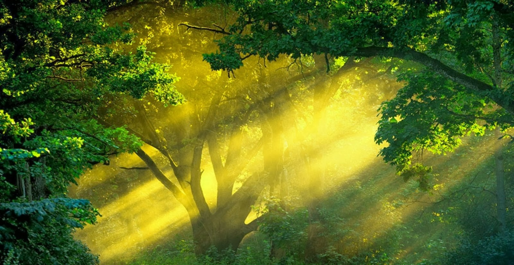

Nature
1. Jim Corbett
Jeep safari in Jim Corbett is one of the most popular tourist attractions in Uttarakhand If you're looking for famous Uttarakhand tourist places then this pace is a must visit. Formerly known as Haley's National Park, Jim Corbett was established in 1938 and attracts visitors for its Royal Bengal Tigers. The park is home to some 600 species of birds, an equal number of animals and around 488 different types of plants and trees and is amongst the best places to visit in Uttarakhand.. Jim corbett organises safaris and hiking trails through the dense forest's buffer zones all through the year. Safari tour also remains one of the best things to do in Jim Corbett.
2.Valley Of Flowers and Hemkund Sahib
The beautiful Valley of flowers has to be on your list of places to visit in Uttarakhand One of the most beautiful places to visit in Uttarakhand is the Valley of Flowers. For those who admire the beauty of nature, the valley of flowers near Hemkund Sahib is a paradise. Other than that, it is a great place for trekking. Hemkund Sahib is a holy place for the Sikh community and amongst the best Uttarakhand destinations.